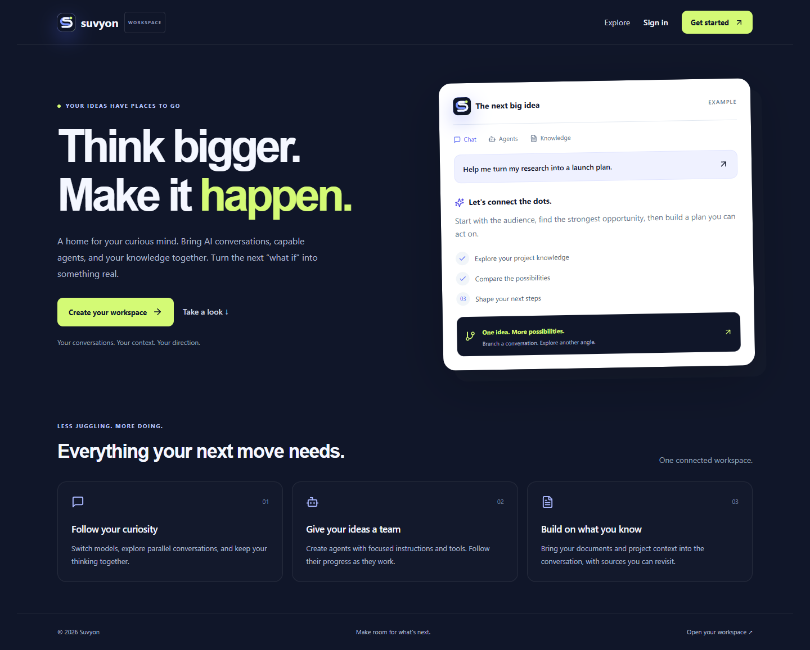

Provider-neutral by design
Nine BYOK providers, encrypted credentials, model validation, streaming, and sequential failover.
Generative AI engineer · Bengaluru
I turn language models into reliable products—grounded in evidence, bounded by permissions, and engineered for the real world.
retrieve(evidence)12msverify(permission)passexecute(tool)bounded01 / Philosophy Intelligence is useful. Reliable intelligence ships.
I began with the systems that keep businesses moving: ERP workflows, warehouse devices, integrations, APIs, and production support. That foundation shapes how I build AI today.
The model is one component. The product is everything around it—retrieval, authorization, orchestration, failure handling, evaluation, and an interface people can actually use.
Follow the journeyIndependent product · 2026
One workspace. Many models. Grounded answers and capable agents.

I designed Suvyon as an application-owned workspace that keeps conversations, knowledge, provider choice, and tool execution behind one coherent permission boundary.
Nine BYOK providers, encrypted credentials, model validation, streaming, and sequential failover.
PDF/DOCX ingestion, embeddings, pgvector retrieval, relevance thresholds, and source diversity.
Typed tools, bounded iteration, explicit stop controls, and human approval before email side effects.
A modular product, not a notebook demo.
Three years of shipping, integrating, debugging, and supporting business-critical software—now applied to AI.
CGI Inc. · Bengaluru
Exploring enterprise GenAI use cases and developing Python, RAG, semantic-search, and automation patterns with a focus on maintainability and practical adoption.
CGI Inc. · Bengaluru
Built ERP integrations and Java-based warehouse PDA workflows across finance, inventory, procurement, manufacturing, and sales—connecting Business Central with SAP, D365 F&O, and third-party systems.
From retrieval quality to the interface where the answer becomes useful.
Provider abstraction, prompt design, tool calling, streaming, context management, and failure handling.
Document ingestion, chunking, embeddings, vector search, retrieval controls, and grounded synthesis.
Bounded execution loops, permission-aware tools, observations, synthesis, and human approval.
Secure APIs, relational data, responsive interfaces, authentication, migrations, and cloud deployment.
Bengal College of Engineering & Technology · MAKAUT · 2023
Bronze AwardEnterprise modernization & delivery
Power Performer × 2AI, backend & integration initiatives
Let’s build the system around the model—not just the demo around the prompt.